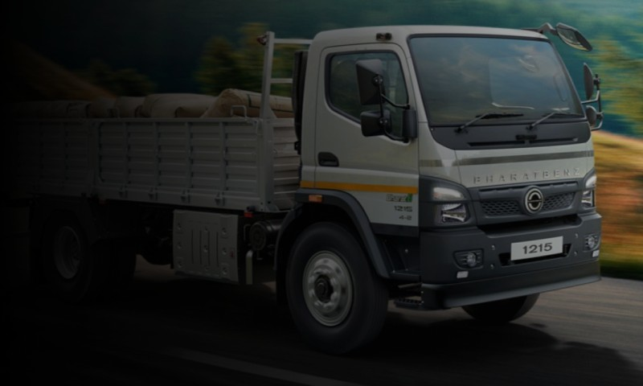
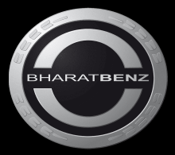

Food Grains
Bulk grain transport from farms and mandis to FCI warehouses, flour mills, and distribution centres across India.

Find the right truck by sub-application, GVW, and route type
Find Your TruckAgricultural produce transport is one of the most demanding freight segments in India. Cargo ranges from dry food grains moving in bulk from mandis to urban distribution centres, to perishable fruits and vegetables that must reach retail markets within narrow delivery windows. Every delay, every rough haul, and every overloaded run translates directly into spoilage, financial loss, or a missed market opportunity.
The trucks serving this segment carry a specific combination of demands. They need strong GVW ratings and high payload capacity for bulk grain loads, fuel-efficient powertrains to keep per-trip costs viable on thin agri-logistics margins, and the reliability to maintain turnaround schedules during peak harvest and mandi procurement seasons. For perishable cargo, on-time delivery becomes the primary concern. Body fitment compatibility for ventilated or insulated containers adds another layer of requirement.
BharatBenz offers a verified range of trucks purpose-matched to agricultural produce transport. From the 1617R, a 16-tonne MDT suited for mandi-to-market distribution, to the 3526R and 3832R, 8x2 rigids at 35 and 38 tonnes GVW that account for the largest share of BharatBenz heavy rigid volume in the agriculture and perishables segment. The range covers every scale of agri freight operation.
Whether you are running food grains from Punjab to Delhi or distributing fruits and vegetables across wholesale markets, use this page to select the right BharatBenz truck for your specific sub-application, route, and payload requirement.

Bulk grain transport from farms and mandis to FCI warehouses, flour mills, and distribution centres across India.
Time-critical transport of perishable produce from farm gates and APMC mandis to wholesale and retail markets.
No trucks match your search.
Compare BharatBenz models by GVW, payload, and body type for agri freight.
Agricultural produce transport runs on tight margins. BharatBenz trucks are engineered for fuel efficiency across the GVW range. The 3526R and 3832R 8x2 rigids run BS6-compliant engines tuned for highway fuel economy at full load, while the 1617R delivers competitive mileage on shorter mandi cycles. Lower fuel cost per tonne-kilometre is the single biggest lever for agri fleet profitability.
The BharatBenz 2826R and 3526R each carry up to 20,600 kg payload, enabling grain transporters to run at legal axle limits on every trip. Agriculture and perishables account for the largest share of volume on BharatBenz 8x2 rigids. The 3526R and 3832R are specifically built for the load cycles and route demands this segment places on a truck.
Peak grain procurement and perishable harvest windows are compressed. A breakdown during the rabi or kharif season means missed loads and direct revenue loss. BharatBenz trucks are built to Daimler engineering standards for high uptime, backed by ProServ after-sales and over 300 service touchpoints across India's agricultural belt states.
BharatBenz recommends different models by sub-application. For food grains, the 1617R, 2826R, 3526R, and 3832R are the recommended range. For fruits and vegetables, the 1215R, 1415R, 1617R, 2826R, and 3526R are recommended. The 8x2 rigids, the 3526R and 3832R, carry the highest share of BharatBenz HDT-R volume in the agriculture and perishables segment.
For long-haul bulk grain on national highways, 28-tonne to 38-tonne GVW models (2826R, 3526R, 3832R) give the best payload economics. For mandi-to-market distribution of fruits and vegetables in urban areas, 12-tonne to 16-tonne models (1215R, 1415R, 1617R) are more practical, offering better fuel efficiency and easier to manoeuvre in congested mandi yards and market lanes.
Yes. BharatBenz chassis across the agricultural produce range, including the 1617R, 2826R, and 3526R, are compatible with ventilated body and insulated body fitments for perishable produce. Reefer-compatible options are also available. Body fitment is done through authorised body builders; your nearest BharatBenz dealer can advise on chassis-specific fitment requirements.
Yes. BharatBenz has over 300 dealer and service touchpoints across India, including strong coverage in Punjab, Haryana, Uttar Pradesh, Madhya Pradesh, Maharashtra, Karnataka, and Andhra Pradesh, the states that generate the highest volumes of agri freight. The ProServ after-sales programme covers breakdown support and genuine parts supply.
Use the sub-application cards above to select your cargo type: food grains or fruits and vegetables. Each sub-application page lists the BharatBenz-recommended models with verified GVW, payload, body type, and use-case guidance. You can also use the TrucKonnect telematics tool post-purchase to monitor fleet performance across your agri routes.
Help Me